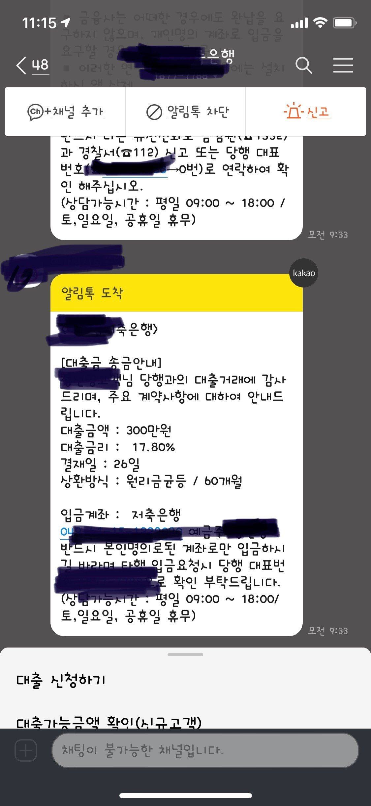

[주부대출] 김용혁 이사님 감사합니다
안녕하세요
소득없는 주부이고 기대출이 대부3건 저축은행 1건 있습니다 왠만하면 있는대출 잘 관리나 하면서 갚아나가자 하다가.....~ 갑작스레 생활자금이 부족해지면서 300만원 정도가 필요하게 되었습니다 너무나 안좋은 상황이고 더이상 대출이 어렵지않을까 싶어서 고민을 많이 했어요 ㅠ 결국 상황이 그러다보니 예전 뱅크앤론에서 많은도움 주셨던지라 다시한번 찾아오게 되었습니다
김용혁 이사님과 상담하면서 저축은행건으로 알아봐주신다고 하셔서 기다리면서 인증하고 하다보니 결국 저축은행에서 300만원이 딱 승인되었습니다 ^^
어려운상황에서 아예 안될까봐 너무 떨면서 기다렸는데 승인이 나와서 너무 좋았네요 ㅎㅎ김용혁 이사님 너무 감사합니다 더더 잘깊아나가면서 신용관리도 잘해서 문의드리러 오겠습니다 ..
